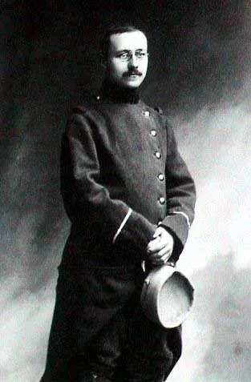
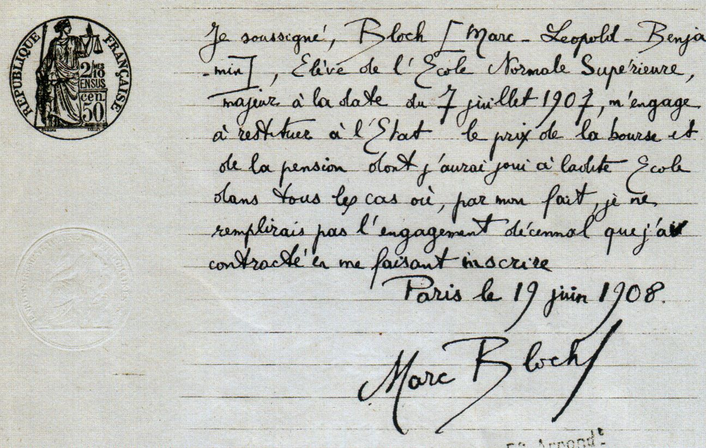
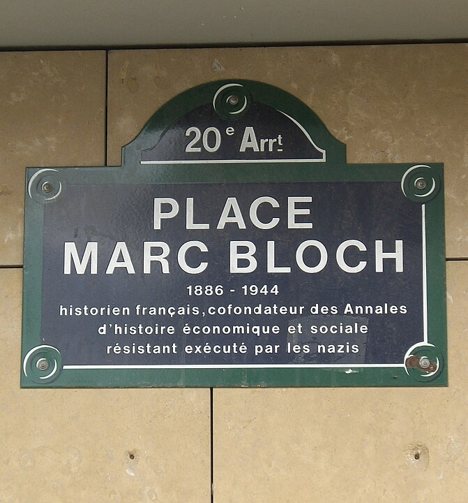
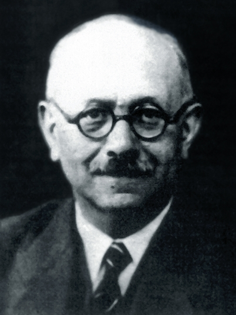
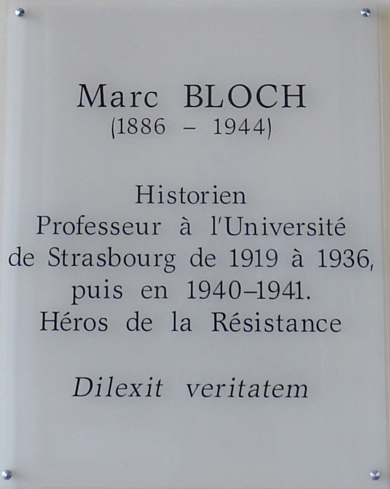
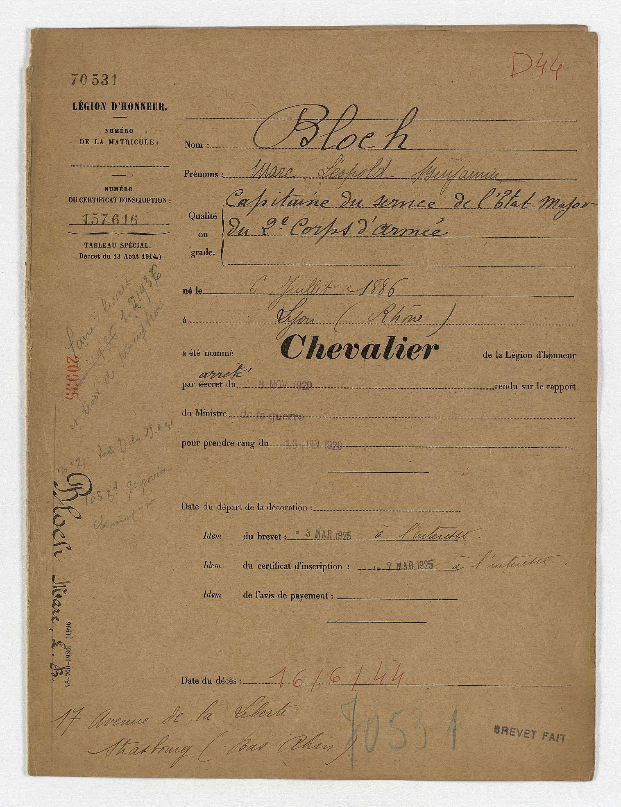
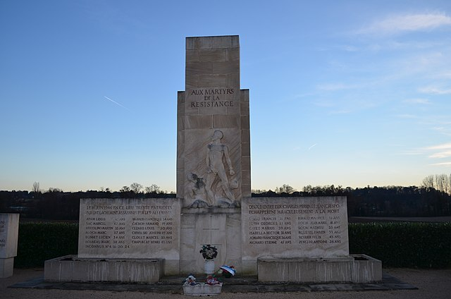

Marc Bloch: A Man of Courage
Bloch’s legacy goes well beyond the Annales, or today’s Marc Bloch Universities. In fact, he is undoubtedly one of the most overlooked heroes of the 20th Century. He forever changed the way history is perceived, redefining what it means to be a historian.
{kind=link}
10 Mar 2015 - Lamont Michael Kimberlin
Marc Bloch may not be a well-known figure of history, but his contributions to society, and his family’s legacy to the human race are undeniable, and perhaps unquantifiable. Bloch was a father, a decorated soldier, a historian, a teacher, and a leader within the résistance movements following the 1940 Nazi invasion of France. Marc Bloch was a true hero, who continued to maintain a thirst for knowledge, and displayed selflessness and honor up to his very last breath. Even under brutal torture from one of the Nazi’s most notorious henchmen, the only information Bloch gave up in the end, was his own name.
Marc Léopold Benjamin Bloch was born in Lyon, France on 6 July 1886, to Sara and Gustave Bloch. He had one brother, Louis Bloch, who was seven years his senior. According to Carole Fink, author of, Marc Bloch: A Life in History, there is little known about his childhood, due to a lack of records. However, he is known to have greatly admired his older brother, Louis, who went into the field of medicine. Fink also described Bloch’s mother, born Sara Ebstein, as an intelligent and loving woman, with talents in music, writing, and organization. Marc’s father, Gustave Bloch, was a historian, and specialized in the history of administrative policies in Rome. Although there is a lack of information on Bloch’s early life, it is clear that the family was close knit, and fostered intellectual stimulation through reading and conversation. Being born into such revolutionary times, Bloch flourished, and continued to ask questions about important issues of the day.
One of these important issues of the time was the “Dreyfus Affair.” This controversy is said to have had “a profound impact” on Bloch, who was only eight when Dreyfus was arrested for treason. Because of the injustice facing Dreyfus, Bloch believed that “even apparently objective searches” for the truth could become tainted. This realization helped Bloch reshape his thinking on the manner in which to analyze history. As a youth, Bloch used this energy to excel through academia, and he achieved great success.
Marc Bloch was accepted as a student to Paris’s Lycée Louis-le-Grand at age 10. He was enrolled at the institution from 1896 to1904, and received a baccalaureate with honors in 1903. Bloch was accepted at the École Normale Supérieure in 1904, at age 18, and served in the military between 1905 and 1908, under the 76th R.I. at Fontainebleau. He was commissioned corporal on, 18 September 1906, and returned to the École Normale Supérieure in October of 1906. Bloch received a diploma in History and Geography in 1907 and an “agrégation” in History and Geography in 1908. From École Normale Supérieure, Bloch was accepted to the University of Berlin and the University of Leipzig, where he attended two semesters in 1909.
Marc Bloch as a sergeant in the First World War.
Bloch also spent time as a Resident at the Thiers Foundation, which is a research library for history. It was during this period at Thiers that he published some of his first articles, between 1909 and 1912. Finally, Marc Bloch was named Professor of History and Geography at the Montpellier Lycée between 1912 and 1913. But the world was on the brink of an unimaginable war, the likes of which had never been witnessed by humanity.
Marc Bloch entered World War I in August of 1914, as a sergeant in infantry. He even battled typhoid in January of 1915, and was taken out of action until the following June. According to Fink, Bloch nearly died from the illness, prompting him to draw up a will on the 1st of June in 1915. Bloch received the Croix de guerre, also referred to as the “four citations,” and the Legion d’honneur, or Legion of Honor. He was also considerably versatile and resilient, according to records. During the course of several years in combat, Bloch worked in reconnaissance, as an intelligence officer, and witnessed the brutality of trench warfare. The record also shows that Bloch was critical of the professional army, in its “inflexibility, lack of historical perspective, and callousness towards the troops.” However, Bloch uplifted the “ordinary soldiers” as honorable and courageous, saying he wanted to be like them in this respect. At age thirty-two, and on his birthday, 6 July 1918, Bloch received his fourth decoration, and was acknowledged as a “remarkable officer.” He finished the war as “capitaine-adjoint,” or Captain Marc Bloch.
Although there is no record, Bloch was, most likely, extremely excited to return to his home and academic pursuits at Strasbourg. There was also excitement for the Bloch’s in moving into a larger apartment in 1923. Bloch continued his career as a lecturer on the history of the Middle Ages in 1919, at the Université de Strasbourg Faculté des lettres, and married his sweetheart, Simmone Vidal, that same year. The couple had six children, who were born between 1920 and 1930: Alice in 1920, Etienne in 1921, Louis in 1923, Daniel in 1926, Jean-Paul in 1929, and Suzanne in 1930. Bloch became an adjunct professor at Strasbourg in 1921, and was appointed to History of the Middle Ages Chair at Strasbourg in 1927. He bought a family home in the French country-side in 1930, and by 1936 he was appointed “maître de conferences of economic history at the Sorbonne.” He continued his career as a professor, and in 1938 he was appointed Economic History Chair at Strasbourg. It is said that Strasbourg had the greatest influence on his life overall. In fact, Bloch met historian Lucien Febvre in Strasbourg. It was Febvre who co-founded the Annales School, or Annales, along with Bloch. The two scholars became quite close, as they shared similar interests and sensibilities. Although the two historians found disagreement in 1941 over the Annales continuing work, they had formed a close friendship before the war. Bloch also became constantly critical of the educational system, and even some of his colleges’. He was particularly critical of the history curriculum of the time, with his first “attacks” on it beginning in 1921. But this time of peace and tranquility came to an abrupt end, as the world prepared, yet again, for calamity as never before recorded.
Marc Bloch and Simmone Vidal engagement document.
Bloch was mobilized for World War II on, 23 August 1939. The professor was fifty-three years of age when he was called upon to participate in a world war for the second time. Bloch worked within the intelligence community along-side British agents, however he did not enjoy the work and was critical of its shortcomings and failures. This criticism was made apparent in Bloch’s unfinished work, Strange Defeat; a Statement of Evidence Written in 1940, published as L’Étrange Défaite after his death in 1946. Bloch focused his complaints on French leadership and disorganization as the main cause of defeat. Eventually Bloch was placed in charge of supplying France with petrol, while still carrying out certain duties within the intelligence arena. Bloch enjoyed this work, and used his downtime to write. Although he found time to continue reading and writing, he was proficient in his work. In fact, Bloch managed to keep France supplied with petrol, even during the Nazi invasion.
Marc Bloch Place in Paris, France.
Between May and June of 1940, Bloch participated in the “northern campaign,” and was forced to escape to England for safety. He moved back to France to find that the college at Strasbourg had moved to Clermont-Ferrand. As a Jewish descendent under Nazi occupation in France, Bloch was allowed to work under special conditions of the law, which took into account knowledge or expertise on a case by case basis. Bloch requested a transfer to a more suitable climate for his wife in 1941, due to her poor health conditions. The request was granted, but even greater hardships were coming for the Bloch’s, and for others caught up in these unimaginably difficult and trying times.
Marc Bloch: Historian. French Resistance leader. Hero.
Klaus Barbie, the war criminal notorious as 'the Butcher of Lyon,' personally interrogated Bloch.
In November of 1942, Bloch and his family were forced to leave Montpellier, and the Bloch’s relocated to Fougères. Bloch continued to write, and by 1943 he went underground, representing “Franc-Tireur,” and other résistance groups out of Paris and Lyon. Bloch continued to work toward insurrection, and as biographer Carole Fink articulated, “There were of course, long periods of unaccustomed solitude. Bloch spent his fifty-seventh birthday alone. Through contacts he anxiously followed the fate of his two exiled sons, from their long internment in a Spanish prison camp to their release and escape to Free French in North Africa. He was constantly worried about the safety of his elder daughter, Alice, who was guardian of some eighty four-to twelve-year-olds at a children’s home… During their long periods of separation, he found his life ‘heavy,’ and he was chagrined at having ‘abandoned them.’” It was the guilt Bloch felt concerning his children that caused him to take up a “parental role” within the résistance itself. Although the résistance was a noble and worthy cause, the brutality of the Nazi’s crushed the brave men and women who dared to stand against them.
While in Lyon, Bloch used the “false identity” of Maurice Blanchard, and not only carried out localized plans for the résistance, but he even made local preparations for “D-day.” Bloch was arrested by the Gestapo under this false name on 8 March 1944. Klaus Barbie, who earned the reputation of the “Butcher of Lyon,” personally interrogated and tortured Marc Bloch. On 16 June 1944, he and 29 others were taken from their cells, and driven 30 kilometers at night. They were led out by the roadside and shot to death near the village of Saint-Didier-de-Formans at about 9:00 o’clock. Simmone Bloch, whose health was in increased decline after her husband’s arrest, died shortly after, on 2 July 1944. According to the record, the two were extremely close throughout their marriage, with Simmone acting as Marc’s personal assistant, secretary, advisor, and best friend. Alice Bloch attempted to fill part of the void left by her parents, and legally adopted the two youngest children in the family. Their legacies lived on through the repercussions of their noble actions, and through their children, who survived the horrors of war which were perpetuated by the irrationality of extremism.
Marc Bloch memorial in Strasbourg.
Marc Bloch’s legacy goes well beyond the Annales, or today’s Marc Bloch University, also known as Strasbourg II and UMB in France. Marc Bloch encouraged historians and other intellectuals to find alternative ways to evaluate and interpret history. Bloch explains this idea best in the introduction to his last unfinished work, Apologie pour lhistorie, published after his death as, The Historian’s Craft, stating, “But history is neither watchmaking nor cabinet construction. It is an endeavor toward better understanding and, consequently, a thing in movement.” In other words, as people discover additional information, whether through archeological discoveries, manuscripts, the release of documents, etc., a greater understanding of history can be achieved. However, this higher line of reasoning can only be obtained through a thorough and objective analysis of the facts, and must continue from generation to generation. The search for truth and justice demands patience and requires empathy.

Bloch memorial in France. Plaque Bloch ruede Sèvres Paris.
Bloch was not only revolutionary as a résistance leader, but he was also revolutionary as an intellectual thinker. He argued for further analysis of historical events and evidence, and he hoped for a more integrated world, based on cooperation and understanding. Marc Bloch is undoubtedly one of the most overlooked heroes of the 20th Century. He forever changed the way history is perceived, redefining what it means to be a historian.
Marc Bloch made a knight of the Legion of Honour.
Marc Bloch Monument des Roussilles.
Selected Bibliography
Website:
Dash, Mike. History Heroes: Marc Bloch Smithsonian. Accessed April 15, 2016. http://www.smithsonianmag.com/history/history-heroes-marc-bloch-134082792/?no-ist.
Periodical:
Weber, Eugen. About Marc Bloch The American scholar 51 (January 01, 1982), (accessed April 15, 2016).
Scholarly books:
Bloch, Etienne. Marc Bloch: 1886-1944, Une Biographie Impossible = an Impossible Biography
Limoges:
Culture Et Patrimoine En Limousin, 1997. Fink, Carole. Marc Bloch: A Life in History Cambridge: Cambridge University Press, 1989.
Jackson, Julian. The Fall of France: The Nazi Invasion of 1940 Oxford: Oxford University Press, 2003.
Primary sources:
Bloch, Marc. Strange Defeat; a Statement of Evidence Written in 1940 New York: Octagon Books, 1968.
Bloch, Marc. The Historian's Craft New York: Knopf, 1953.
What does liberty mean to you?
Embrace your liberty!